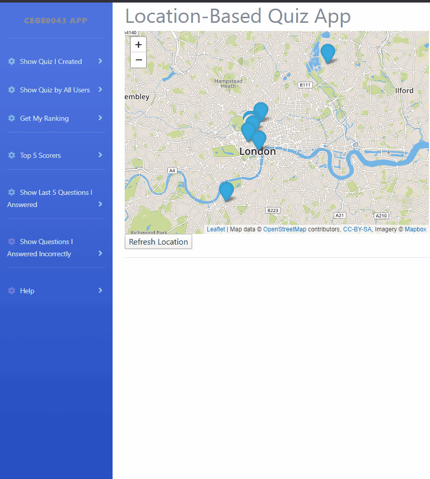
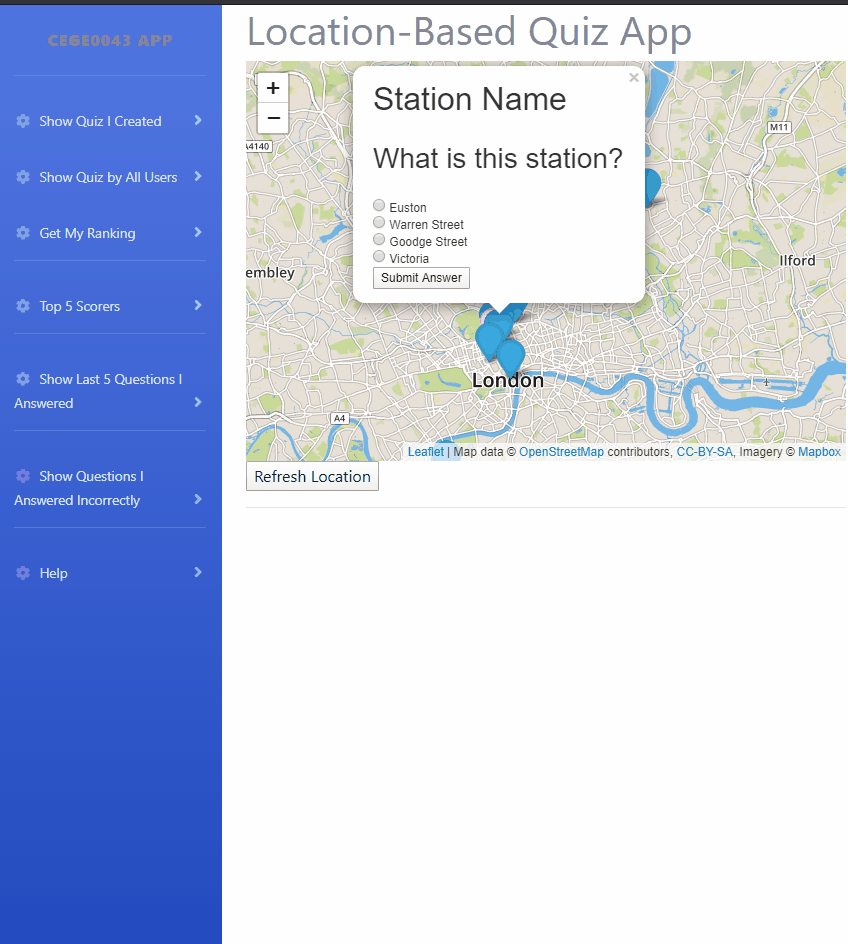

This app is a quiz game. When you are close to a quiz point, the question will popup and you can answer it. You will be told if you're correct and your answer will be recorded. This app will track your location, the pink marker shows where you are.
The following gif shows the process of answering a question:
This app designs the following functionalities:
This app allows you to have four choices for the layer of quiz points displayed on the map.
There are 4 menus "Show QUiz I Created", "Show Quiz by All Users", "Show/Remove Last 5 Questions I Answered", "Show Questions I Answered Incorrectly". Just click on the corresponding menu to switch the layer on map
Notice: the proximity alert is allowed in the first, second and forth choice above. In addition, you can switch the layer total freely without any conflicts.
Notice: If the proximity alert is not allowed after you jump to the other layer, please try to click the button "Refresh Location".
This app allows you to get your ranking and the top five users. Both of the results are dynamic. The following gif shows the process:
